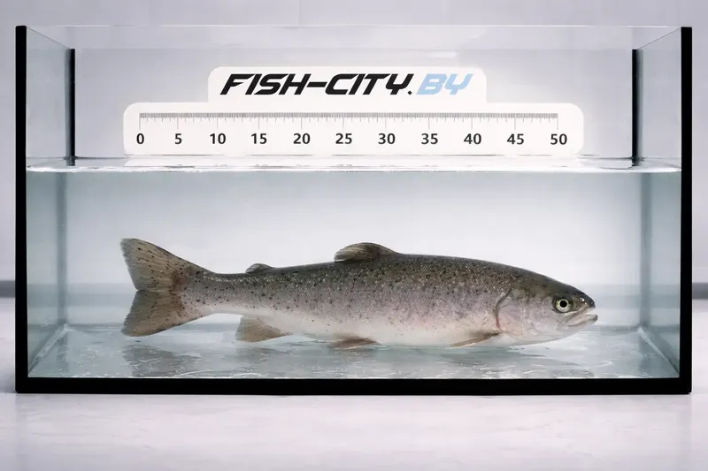

Живая рыба
Форель радужная живая 2000-3000 г, РБ
Цена и наличие
- 2-3 кг47,5 BYN / кгВ наличии
Данные на 23.11.2026.
Характеристики
- Размерный ряд
- 2000-3000 г
- Вид разделки
- непотрошеный
- Производитель
- РБ
Описание
Радужная форель — это роскошь для вашего стола.
ОСНОВНОЕ
В вес 2-3 кг входят одна/две рыбы. Также, вместо живой/свежей рыбы, можно приобрести мальков радужной форели в пруд. Пищевая ценность на 100 г продукта белки – 20.5 г, жиры – 3.5 г, углеводы – 0 г Энергетическая ценность на 100 г продукта 119 ккал Тип питания низкокалорийный продукт, экологичный продукт Упаковка размерный ряд рыбы от 2 до 3 кг; в упаковке 1-2 рыбы Условия и срок хранения хранить не более 10 часов в пакете с кислородом с момента упаковки
ДОПОЛНИТЕЛЬНО
Живая радужная форель весом от 2 до 3 кг — крупная рыба белорусского производства, которая хорошо подходит для запекания целиком, приготовления на гриле и разделки на стейки или филе. Такой размер удобен для большой семьи, праздничного стола или приготовления блюда на компанию. Радужная форель отличается нежным, сочным мясом и приятным вкусом. Крупную рыбу можно запекать в духовке с овощами и зеленью, готовить на мангале или гриле, жарить порционными кусками, использовать для ухи, супов и других рыбных блюд. Благодаря весу 2–3 кг одну рыбу удобно разделить сразу на несколько порций или использовать для разных способов приготовления. Форель такого размера особенно хорошо подходит для нарезки на крупные стейки. Также ее можно приготовить целиком для праздничной подачи. При правильном приготовлении мясо остается сочным и хорошо сочетается с лимоном, зеленью, овощами и различными специями. В продаже — живая радужная форель весом 2000–3000 г, выращенная в Республике Беларусь. Реализация живой рыбы позволяет получить свежий продукт непосредственно перед разделкой и приготовлением. Фактический вес конкретной рыбы может отличаться в пределах указанного диапазона. Заказать живую радужную форель 2–3 кг можно для домашнего приготовления, гриля, мангала или праздничного застолья. При выборе количества стоит учитывать способ разделки, планируемый размер порций и количество гостей.